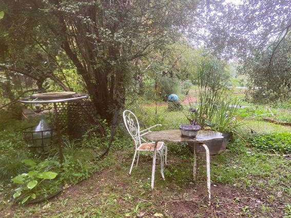

Una passeggiata verso l'interno

Benvenuto in questo piccolo universo di natura, calma e scoperta.
Sei arrivato in un luogo dove il tempo può avere un altro ritmo. Qui non c'è bisogno di avere fretta, di arrivare da qualche parte o di fare qualcosa in un modo particolare.
Ti chiediamo una cosa sola: essere presente.
In tutto il giardino troverai angoli che ti invitano a parlare, a camminare, a giocare con i profumi, ad ascoltare l'acqua e forse a scoprire qualcosa di nuovo su te stesso. Alcuni momenti sono da condividere; altri da godere in silenzio.
Lasciati guidare dai sensi e lascia che ogni spazio ti parli a modo suo. Non cercare alcun risultato. Non ci sono risposte giuste o sbagliate.
Il cammino comincia qui. Il resto lo scoprirai tu.
La mappa

Partiamo per un viaggio nel giardino, intorno al suo centro, seguendo sentieri che portano dall'esperienza condivisa alla scoperta personale.
Quattro angoli, quattro modi di entrare in contatto con la natura e con se stessi.
- Angolo 1: l'angolo delle parole e della riflessione.
- Angolo 2: il sentiero dell'acqua.
- Angolo 3: il gioco dei profumi.
- Angolo 4: la trasformazione.
Segui il percorso senza fretta: fermati, respira, guarda, lasciati sorprendere.
Gli archi profumati ti porteranno da uno spazio all'altro. Lungo i sentieri troverai anche altri luoghi per sederti, cantare, leggere, meravigliarti o semplicemente osservare.
Angolo 1 · L'angolo delle parole e della riflessione

Condividere parole e pensieri, riflettere e ascoltare gli altri.
All'ombra dei tigli, il giardino ci offre un luogo per fermarci e incontrarci.
Forse veniamo da giorni pieni di parole, di pensieri che si accumulano o di conversazioni che continuiamo a rimandare. Ora abbiamo l'occasione di sederci, respirare e ascoltare.
Intorno a te ci sono brevi testi con pensieri su cui riflettere. Leggine uno che ti colpisce. Lascia che le parole si posino dentro di te.
Se sei in gruppo, puoi condividere ciò che la lettura ti ha fatto venire in mente. Puoi anche ascoltare gli altri senza bisogno di rispondere. A volte ascoltare davvero è un bel modo di fare compagnia a qualcuno.
Non serve arrivare a una conclusione. Basta che una parola, un'idea o uno sguardo ci faccia sentire un po' più vicini.
Fermati un momento e chiediti:
Che cosa ho bisogno di dire? E che cosa ho bisogno di sentire?
Lascia che la conversazione scorra senza fretta, come una brezza che passa tra le foglie dei tigli.
Angolo 2 · Il sentiero dell'acqua

Godere di tutti e cinque i sensi. Camminare, sentire il corpo e lasciarsi riempire dal giardino.
Sotto il nocciolo e il giuggiolo, il giardino si apre davanti a te e ti invita a lasciarti andare.
Senti i piedi che toccano il suolo, il corpo che si muove, l'equilibrio che si sposta. Ascolta il respiro e lascia che sia lui a dare il ritmo. Non c'è fretta né una meta da raggiungere. Solo il piacere di essere presente.
Arrivato alla fine, siediti un po': ti aspetta un luogo per riposare e contemplare il giardino. La cascata suona la sua musica e l'acqua offre la sua frescura. Guardati intorno, ascolta l'acqua e le foglie accarezzate dalla brezza.
E ora chiediti:
Che cosa è cambiato in te dopo questa passeggiata?
Forse basta chiudere gli occhi, respirare profondamente e sentire di far parte di questo momento.
Angolo 3 · Il gioco dei profumi

Risvegliare l'olfatto, giocare e scoprire l'anima della natura nel giardino.
Alcuni ricordi non ci arrivano attraverso gli occhi né attraverso le parole. A volte basta un odore perché qualcosa dentro di noi si risvegli.
In questo angolo ti aspetta un piccolo gioco di scoperta. Prendi uno dei vasetti, aprilo e avvicina delicatamente il profumo. Respira. Prova a indovinare quale pianta si nasconde dentro.
Che cosa ti suggerisce questo odore? Ti sembra familiare? Ti riporta un ricordo? Risveglia curiosità, calma, gioia o un sentimento che non sai bene come chiamare?
Una volta fatta la tua scoperta, vai a cercare la pianta nel giardino. Osserva le sue foglie, la sua forma, il suo colore e dove cresce.
Lascia che il gioco ti ricordi che scoprire è anche un modo di imparare a guardare. Forse qualcosa che sembrava piccolo o insignificante diventa all'improvviso una scoperta speciale.
Chiediti:
Quante cose intorno a me non ho ancora imparato a notare?
Condividi le tue scoperte con gli altri e goditi la sorpresa. Qui anche lasciarsi sorprendere fa parte del cammino.
Angolo 4 · Trasformazione

Fermarsi, guardarsi e aprirsi al cambiamento.
Scoprire la farfalla che è in noi
Sei arrivato all'ultimo angolo del giardino. Questo spazio è solo per te.
Prima di sederti, fermati davanti al testo che troverai a terra. Leggilo con calma e lascia che le sue parole restino con te.
Il bruco e la farfalla sono lo stesso essere, ma non hanno lo stesso modo di stare al mondo. Ciò che un giorno sembra impossibile al bruco diventa possibile quando si trasforma in farfalla.
E noi? Quante volte ci vediamo come un bruco, senza accorgerci delle ali che dobbiamo ancora scoprire? Quante risorse, quanta forza e quanta bellezza aspettano forse il momento di risvegliarsi dentro di noi?
Davanti allo specchio
Ora siediti davanti allo specchio. Guardati con tenerezza, senza giudicarti. Come ti senti oggi? Come ti vedi in questo momento della tua vita? Che cosa vorresti trasformare, curare o far crescere dentro di te?
Quando sei pronto, gira lo specchio finché trovi l'angolo del giardino che ti piace di più. Cerca la vista che ti fa stare bene e guardala apparire dietro di te.
Guarda di nuovo. Ora non sei solo tu davanti a uno specchio. C'è anche il giardino. Gli alberi, le piante, la luce, la terra… Tutto fa parte del quadro, e tu ne sei una parte in più.
Che cosa è cambiato nel modo in cui ti vedi?
Forse, prima di sederti, ti sentivi solo con te stesso. Ora, invece, potresti scoprirti parte di un tutto più grande, collegato alla vita che ti circonda.
Concediti qualche istante per sentirlo. Non servono risposte immediate. Alcune scoperte hanno bisogno di silenzio, tempo e fiducia.
Forse trasformarsi non significa diventare qualcun altro, ma scoprire tutto ciò che già vive in noi e che non abbiamo ancora lasciato sbocciare.
Quando ti alzi, porta con te questa domanda:
Che cosa vuoi diventare? Quali ali vorresti spiegare?
E ricorda: forse la farfalla che sogni di essere sta già riposando, in silenzio, dentro di te.
Gli archi profumati

Lungo il percorso troverai archi coperti di rampicanti profumati. Sono come fili invisibili che uniscono tutta la passeggiata e ti invitano a respirare con consapevolezza tra un'esperienza e l'altra.
Attraversa lentamente questo arco. Lascia alle spalle, per qualche istante, ciò che occupa la tua mente, ed entra nel nuovo spazio con i sensi svegli.
Prima di proseguire, fermati un momento. Respira profondamente e lascia che il profumo delle piante ti raggiunga con i suoi tempi.
Che cosa risveglia in te questo profumo? Forse un ricordo, un sentimento o semplicemente una sensazione piacevole. Non serve cercare una risposta; senti e basta.
Non serve riconoscere il profumo né trovargli un significato. Notalo e basta.
Così gli archi diventano piccole pause tra un'esperienza e l'altra, e rendono più profondo il carattere meditativo della passeggiata.
Altri angoli
Lungo il cammino avrai scoperto quattro angoli e attraversato gli archi profumati che ti hanno accompagnato con la loro fragranza. Ma il giardino custodisce ancora piccoli tesori. Tra i suoi sentieri troverai altri luoghi in cui fermarti, sederti, riposare, leggere, cantare o semplicemente lasciar passare il tempo.
Forse scoprirai che non c'è altro da fare che guardare, ascoltare e respirare… finché ti sentirai parte di questo piccolo universo, un elemento in più tra gli alberi, le piante, l'acqua e la vita che pulsa qui.
Perché non sei solo qualcuno che passeggia nel giardino: ne fai parte anche tu.
A volte camminare è anche un modo di tornare a se stessi. Non devi trovare una risposta. Forse basta respirare e sentire che, proprio ora, sei qui.
Il cammino ha in serbo ancora molte sorprese:
